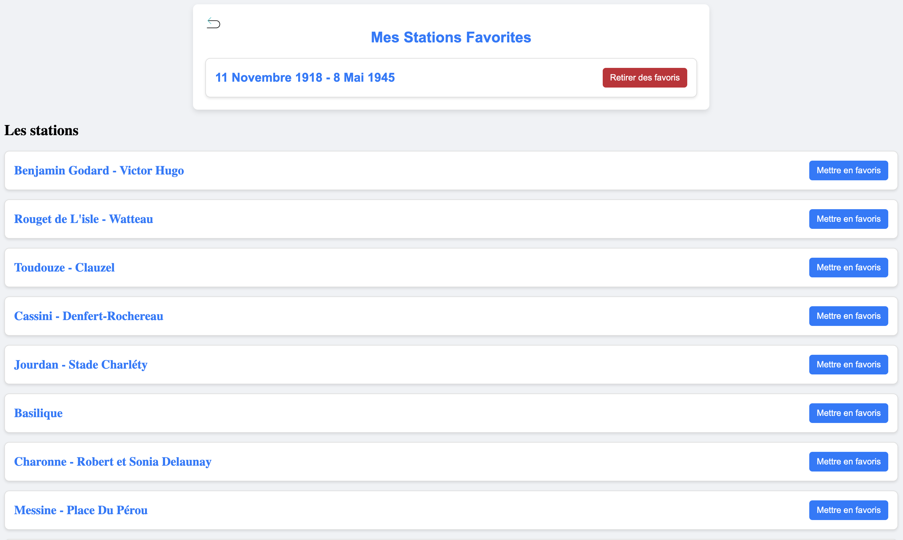
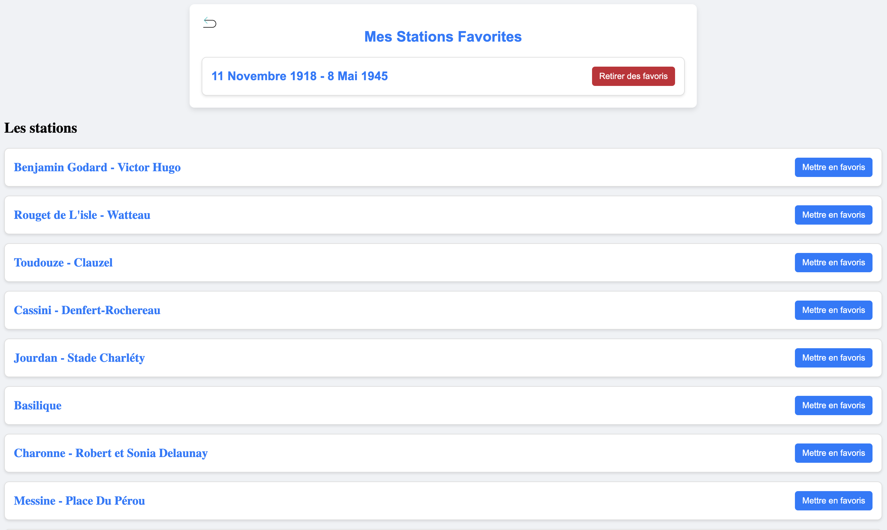

Présentation du TP - Veliko
Aperçu du Projet
Le projet TP sur l'application Veliko a pour but de développer une plateforme permettant aux utilisateurs de vérifier la disponibilité des vélos en libre-service dans les stations Vélib’ de Paris. L’application utilise des données en temps réel pour afficher, de manière interactive, la position des stations et leur statut actuel (nombre de vélos disponibles, espaces libres, etc.). Le principal défi était de concevoir un système capable de récupérer et d'afficher ces informations de manière fluide, tout en garantissant la réactivité de l'interface.
Le site repose sur l’utilisation de Symfony pour la gestion de l’application backend et l’intégration de données à travers des API. L’une des tâches majeures était d'assurer que les informations sur les stations soient constamment mises à jour pour garantir aux utilisateurs une expérience fluide et précise. Ce projet s’inscrit dans la tendance actuelle de rendre les services urbains plus accessibles et intelligents en fournissant des informations en temps réel aux citoyens.
Informations utiles
Langages utilisés : TWIG, PHP, JavaScript
Frameworks utilisés : Symfony
Base de données : MySQL
API : API Vélib’, OpenStreetMap
Difficultés Rencontrées
Tout d'abord, une des difficultés majeures a été d'intégrer les données des stations Vélib’. Ces données, provenant d'une API externe, nécessitent une gestion soignée des requêtes pour éviter des erreurs d'affichage ou des erreurs techniques liées à la récupération des informations. Assurer la disponibilité continue de ces données tout en gérant les erreurs a nécessité plusieurs itérations pour rendre l’application stable et robuste.
Ensuite, l'interaction avec la carte interactive a constitué un autre défi. L'objectif était d'afficher les stations de manière dynamique, en tenant compte des nouvelles données qui arrivent régulièrement. Utiliser des outils comme Leaflet pour afficher la carte et interagir avec les données en temps réel a nécessité une bonne maîtrise du JavaScript et de la gestion des événements côté client. Des ajustements ont été nécessaires pour optimiser la performance de la carte, notamment en réduisant les appels API pour améliorer la réactivité de l'application.
Une autre difficulté a été la gestion des erreurs et des cas où les données de l’API n’étaient pas disponibles ou étaient corrompues. Dans ces cas, l'application devait afficher des messages d'erreur compréhensibles et éviter que l'interface devienne confuse pour l'utilisateur. Pour cela, il a fallu mettre en place des mécanismes de récupération et de validation des données avant de les afficher à l'écran.
 

Compétences Acquises
Ce projet m’a permis de consolider mes compétences en Symfony, en particulier la gestion des bases de données avec Doctrine, ainsi que la création d’entités et de relations entre elles. J’ai approfondi l’utilisation des API externes pour récupérer des données en temps réel et les afficher sur le site, ce qui est devenu un aspect fondamental du projet. J’ai également appris à manipuler des outils comme Leaflet, qui permettent d’ajouter des cartes interactives à une application web. Cette compétence est désormais plus développée, notamment pour intégrer des cartes dynamiques qui réagissent aux données qui leur sont envoyées.
En travaillant sur la gestion des erreurs, j’ai également appris à créer des systèmes de récupération d'erreurs robustes qui garantissent la stabilité de l'application. De plus, l'intégration de la gestion des stocks et la mise à jour en temps réel des informations m’ont permis d’acquérir une meilleure compréhension des applications modernes orientées données.
Enfin, l’aspect responsive design a été un point essentiel du projet. En m'assurant que l’application fonctionne bien sur tous les appareils, j’ai pu parfaire ma maîtrise du design adaptatif et de la prise en compte de la diversité des supports pour l’affichage des informations.
Conclusion
Ce projet de TP sur l'application Veliko a été une expérience enrichissante, me permettant de travailler sur des technologies modernes et de résoudre des problématiques techniques variées. Le développement de l’application m’a non seulement permis d’approfondir mes compétences en Symfony et JavaScript, mais aussi d'améliorer mes capacités à travailler avec des API externes et des systèmes de données en temps réel. Les défis rencontrés m'ont appris à anticiper les problèmes techniques et à développer des solutions fiables et efficaces, tant au niveau de la gestion des données que de l'interface utilisateur.
Je suis désormais plus confiant dans ma capacité à développer des applications web complexes et à intégrer des services tiers dans des projets à grande échelle. Ce TP m’a également permis de mieux comprendre l'importance de l'optimisation de la performance et de la gestion des erreurs, deux aspects cruciaux pour garantir la stabilité d'une application en production. En somme, cette expérience a été un pas important dans mon développement professionnel en tant que développeur web.